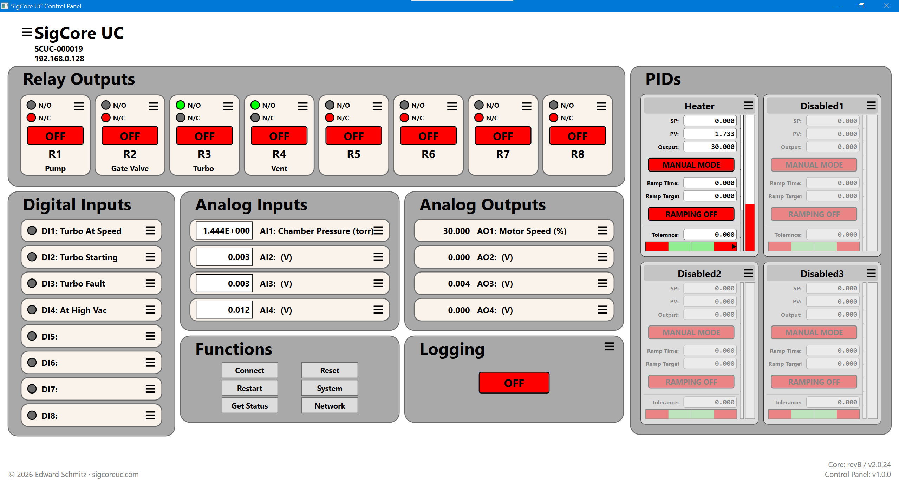
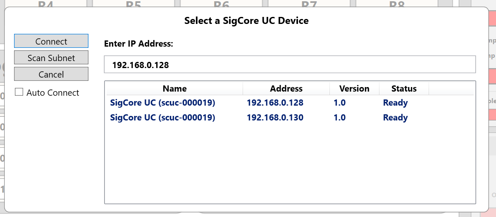
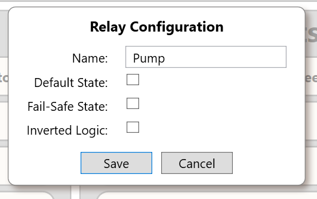
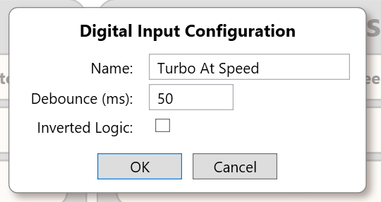
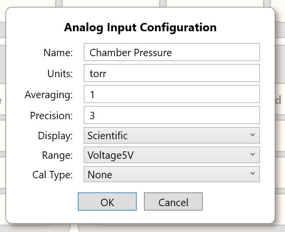
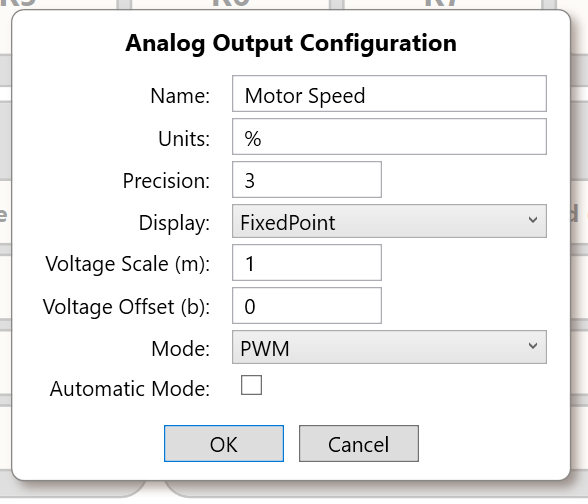
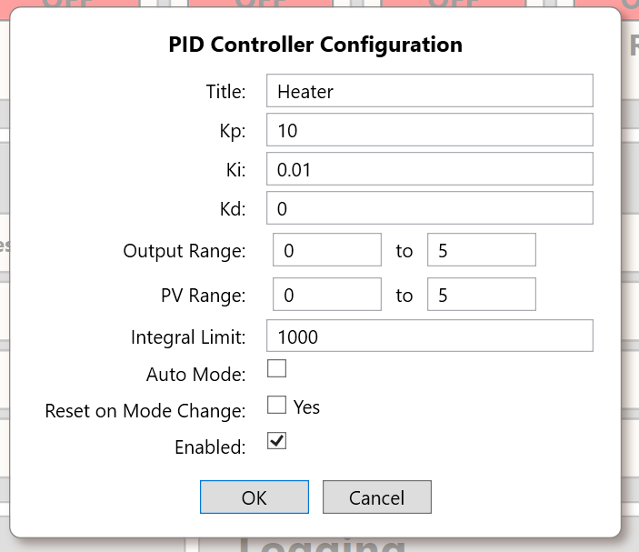
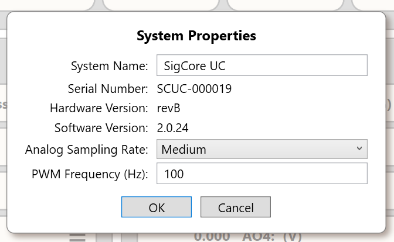
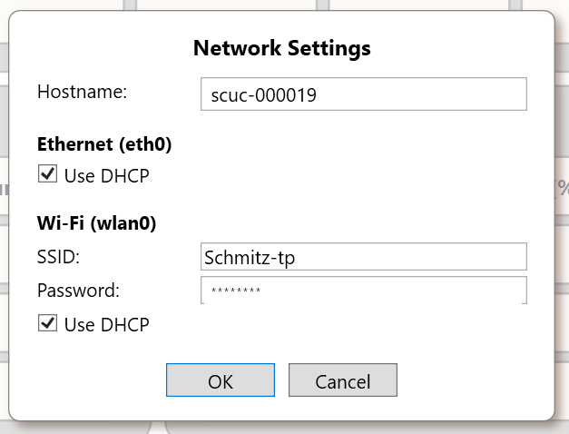
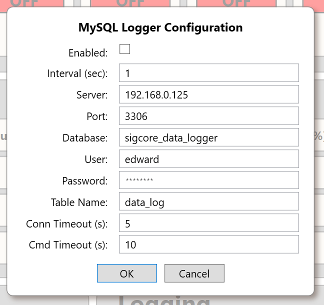

Control Panel Reference
A screen-by-screen reference to connecting to SigCore UC, viewing live I/O, controlling outputs, and editing configuration in the Windows Control Panel.
Overview
The Control Panel provides a single desktop view of the connected SigCore UC controller. Its main window groups relay outputs, digital and analog I/O, PID loops, functions, and logging status. Configuration dialogs are accessed from the corresponding control or function.

Names, addresses, values, software versions, and device states in these illustrations are examples from the captured controller. They are not prescribed defaults.
What the Control Panel does
The Windows Control Panel is the operator interface for a SigCore UC controller. It combines observation and configuration: input indicators report device conditions, output controls allow an operator to issue commands, and the properties dialogs determine how each channel is identified and behaves.
Live values versus settings
Values on the main window represent current operating information. The configuration dialogs specify properties such as names, scaling, ranges, and operating options. Changing a property is different from commanding an output: review the setting and use the dialog’s Save action to submit the change.
The screenshots show an example controller at one point in time. Channel names, readings, version information, and enabled functions may differ on another installation.
Connecting to a controller
Use Connect in the Functions panel to open the device selection dialog. The dialog shows discovered SigCore UC devices and permits an IP address to be entered manually.

- Choose Connect from the main window.
- Select a device from the list, or enter its address in Enter IP Address.
- Choose Connect in the dialog.
| Control | Purpose |
|---|---|
| Scan Subnet | Searches the local subnet for devices. |
| Device list | Shows device name, address, version, and reported status. |
| Enter IP Address | Allows an address to be supplied manually. |
| Auto Connect | Connection option shown in the selection dialog; exact persistence behavior is not established by the screenshot. |
Choosing the correct controller
Use the serial number, system name, and network address shown in the selection list to identify the intended unit before connecting. This is especially important when multiple SigCore UC devices are on the same network.
If discovery does not find a device
First confirm the controller is powered and connected to the network. If the IP address is already known, enter it directly rather than relying on discovery. The device selection dialog also offers Scan Subnet to initiate another search.
After connecting, verify the identity displayed in the main window before operating outputs or editing properties.
Main window
The upper-left identity area displays the system name, serial number, and address. The bottom-right corner shows the Core revision/version and Control Panel version. The panels arrange controls by function.
Eight relay tiles with state indicators and manual control.
Eight input indicators with configured channel labels.
Four live readings with units and display formatting.
Four output readings, labels, and units.
Four controller tiles showing setpoint, process value, output, and mode.
Connection, status, device settings, and logging controls.
Three-line menu icons beside controls open the corresponding channel properties or configuration dialog.
Reading the screen
The identity and version areas establish which controller and software the window is showing. The relay, digital input, and analog input regions represent device I/O; analog output and PID regions can also present operating controls. The Functions area groups device-level actions.
Opening configuration
Use a channel’s menu icon to open the corresponding configuration dialog. The dialog shown depends on the channel type: a relay has startup and fail-safe settings, a digital input has debounce and inversion settings, and analog channels have presentation and scaling options.
Before making a change, identify both the channel number and its configured name. The name is descriptive; the numbered channel identifies the hardware point.
Relay outputs
Each relay tile identifies its channel (R1–R8), displays a configured label, and shows N/O and N/C state indicators. The large red/green state control shows the current output state in the captured interface. A menu icon opens Relay Configuration.

| Setting | Description |
|---|---|
| Name | User-defined label displayed on the relay tile. |
| Default State | Configured startup state. |
| Fail-Safe State | Configured state for fault conditions. |
| Inverted Logic | Option to invert the relay's logical behavior. |
Use Save to submit changes, or Cancel to close without submitting them.
Operating a relay
Relays are discrete outputs. The on-screen state indicator helps distinguish energized and de-energized states; the N/O (normally open) and N/C (normally closed) indications describe the contact arrangement. Do not equate the indicator color alone with whether an external load is receiving power; the wiring and contact selection matter.
Startup and fault behavior
Default State defines the configured state at startup. Fail-Safe State defines the configured state for a fault condition. These should be chosen with the connected equipment in mind, independently of the relay’s normal operating state.
Inverted Logic changes the logical interpretation of a relay command. When using it, verify the expected physical operation at the terminal contacts before putting the connected equipment into service.
Digital inputs
The eight digital input rows (DI1–DI8) display an indicator and the configured input name. The menu icon opens the channel configuration.

| Setting | Description |
|---|---|
| Name | Label displayed for the digital input. |
| Debounce (ms) | Debounce interval in milliseconds, used to suppress short input changes. |
| Inverted Logic | Reverses the logical interpretation of the input. |
Understanding a digital input
Each digital input represents a two-state signal from external wiring. The indicator displays the interpreted state; it is not a command button. Names such as “Door Closed” or “Pressure OK” make the input’s function recognizable to an operator.
Debounce and inversion
Debounce suppresses brief transitions that can occur with mechanical switches or electrically noisy signals. A longer interval rejects more short changes but can also delay legitimate state transitions. Inverted Logic reverses the reported logical meaning of the signal.
When troubleshooting an unexpected state, consider both the physical input voltage and whether inversion is enabled; a correct electrical signal can intentionally appear logically reversed.
Analog inputs
AI1–AI4 show measured values, units, and configured names. Numeric appearance depends on the channel's display settings.

| Setting | Description |
|---|---|
| Name / Units | Channel identification and displayed engineering units. |
| Averaging | Sample-averaging setting. |
| Precision | Displayed numeric precision. |
| Display | Numeric presentation format; the image shows Scientific. |
| Range | Input range selection; the image shows Voltage5V. |
| Cal Type | Calibration method selection; the image shows None. |
Other available dropdown options and calibration-specific controls are not visible in the supplied image.
From electrical input to displayed value
An analog input measures a changing signal and presents it as a number. Range determines the expected electrical input mode, while Units and Display describe how the value is presented. Precision controls the displayed number of digits; it does not by itself improve measurement accuracy.
Averaging, range, and calibration
Averaging combines multiple samples to reduce variation in the displayed reading, at the cost of responsiveness to sudden changes. Select the input range to match the actual source before interpreting the reading. Calibration changes how an electrical measurement is translated into an indicated value; it should be based on known reference measurements.
A useful setup sequence is to verify wiring and the selected range, establish the engineering-unit label, then set presentation, averaging, and any required calibration. Do not use formatting adjustments to conceal an incorrect range or wiring problem.
Analog outputs
AO1–AO4 display the present output reading, its name, and engineering units. Use the channel menu to edit configuration.

| Setting | Description |
|---|---|
| Name / Units | Channel label and engineering units. |
| Precision / Display | Displayed digits and numeric format. |
| Voltage Scale (m) | Multiplier for output scaling. |
| Voltage Offset (b) | Offset for output scaling. |
| Mode | Output operating mode; the screenshot shows PWM. |
| Automatic Mode | Option for automatic rather than manual operation. |
Output value and operating mode
An analog output represents a commanded output signal. The Mode setting selects the available type of output behavior; the captured dialog shows PWM. The applicable scale and units depend on the selected mode and the attached hardware.
Engineering-unit scaling
Voltage Scale (m) and Voltage Offset (b) are coefficients for a linear mapping. In a relationship of the form y = m × x + b, the scale changes the slope and the offset shifts the result. Verify which quantity is treated as x in the selected output mode before applying coefficients to equipment.
Manual versus automatic operation
Automatic Mode indicates that the output may be controlled by another subsystem rather than only by manual commands. Before trying to change a live output, establish whether it is under automatic control and what equipment it drives.
PID controllers
The four PID tiles show their configured titles and runtime values, including SP (setpoint), PV (process value), and Output. They also expose mode, ramp controls, and a tolerance indicator. Disabled controllers appear dimmed.

| Setting | Description |
|---|---|
| Title | Name shown at the top of the controller tile. |
| Kp / Ki / Kd | Proportional, integral, and derivative gain settings. |
| Output Range | Lower and upper output limits. |
| PV Range | Lower and upper bounds for the process-value scale. |
| Integral Limit | Limit applied to the integral component. |
| Auto Mode | Automatic versus manual operating mode setting. |
| Reset on Mode Change | Option to reset controller state when its mode changes. |
| Enabled | Enables or disables the controller. |
The screenshot establishes the visible fields, not the exact runtime effects of changing the mode or ramp controls. Those operating procedures should be verified against the Control Panel before publication.
How a PID loop is organized
A PID controller compares a desired setpoint (SP) with a measured process value (PV) and determines an output intended to reduce the difference. The proportional, integral, and derivative gains determine how the controller responds to present error, accumulated error, and changing error.
Reading the live PID display
The PID tiles bring together the loop title, SP, PV, output, and operating status. The illustrated reference also shows visual indicators for process value, output, and tolerance. These indicators make it easier to assess behavior at a glance, but numerical readings remain important when adjusting a loop.
Tuning and limits
Kp responds to the current error. Ki accumulates error over time and can remove a persistent offset. Kd responds to changing error and may reduce overshoot, but can amplify noisy measurements. Integral Limit constrains integral buildup, while Output Range and PV Range establish the configured bounds used by the controller.
Operating safeguards
Auto Mode and Enabled are different concepts: an enabled controller may operate manually or automatically. Reset on Mode Change specifies whether internal controller state is reset at a transition. When first configuring a loop, confirm the connected sensor and output, reasonable limits, and intended direction of control before enabling automatic operation.
For commissioning, begin with known safe output limits. Change one tuning parameter at a time and observe the response; the appropriate gains depend on the physical process, so the screenshot values must not be treated as universal settings.
Functions and status
The Functions panel contains Connect, Restart, Get Status, Reset, System, and Network. System and Network open the configuration dialogs shown below. The Logging panel displays logging state and has a menu for configuration.
Caution: Restart and Reset are operational commands. This initial reference does not prescribe their effects or confirmation flow because the supplied screenshots do not show those interactions.
Connection and information actions
Connect opens device selection; Get Status requests controller status information. System and Network open their respective configuration dialogs. These actions are different from commands that affect operation.
Operational commands
Restart and Reset are separate controls in the Functions panel. They should be treated as operational commands rather than routine navigation. The precise state transitions and any confirmation prompts need verification from the current Control Panel before definitive instructions are published.
Check the current controller identity before using operational commands, especially when working with several units on a network.
System properties
Choose System from the Functions panel to view or edit general controller properties.

| Field | Purpose |
|---|---|
| System Name | Display name for the controller. |
| Serial Number | Controller's serialized identity, shown as a non-editable field. |
| Hardware Version | Hardware revision information. |
| Software Version | Installed software version information. |
| Analog Sampling Rate | Selection for analog sampling rate; the image shows Medium. |
| PWM Frequency (Hz) | PWM frequency setting in hertz. |
Identity versus adjustable settings
System Name is the operator-facing name of the controller. Serial Number, Hardware Version, and Software Version identify the unit and its installed revisions; their presence in the dialog does not imply that each identifier is user-editable.
Timing parameters
Analog Sampling Rate configures how frequently analog readings are sampled according to the available selection. PWM Frequency sets the output pulse frequency in hertz for applicable PWM operation. Changing timing can affect how quickly the controller responds or how external equipment behaves.
When comparing controllers or documenting a support issue, record the serial number and software version alongside the relevant settings.
Network settings
Choose Network from the Functions panel to open Network Settings. Ethernet and Wi-Fi have separate DHCP settings.

| Field | Purpose |
|---|---|
| Hostname | Device hostname. |
| Ethernet: Use DHCP | Obtains the Ethernet configuration through DHCP when selected. |
| Wi-Fi: SSID | Wireless network name. |
| Wi-Fi: Password | Credentials for the configured wireless network. |
| Wi-Fi: Use DHCP | Obtains Wi-Fi addressing through DHCP when selected. |
When DHCP is not selected, additional manual IP-address fields may be available. They are not shown in the provided screenshot.
Ethernet and Wi-Fi configuration
Ethernet and Wi-Fi are configured separately. DHCP asks the network to assign addressing information; without DHCP, the interface requires appropriate static address, subnet, gateway, and DNS information. The Wi-Fi SSID selects the wireless network, and the password is its authentication credential.
Before submitting changes
Check which interface currently provides access to the controller. A different IP address or incorrect subnet, gateway, or Wi-Fi credential can prevent subsequent connections even if the current dialog accepts the settings.
The screenshot illustrates a DHCP-based configuration with static fields hidden. Do not infer an interface’s currently active IP address from saved static fields while DHCP is enabled.
MySQL logger
The Logging panel displays logging status. Its menu opens MySQL Logger Configuration, where recording and database connection options are set.

| Field | Purpose |
|---|---|
| Enabled | Enables or disables the logging configuration. |
| Interval (sec) | Logging interval in seconds. |
| Server / Port | MySQL server address and port. |
| Database / Table Name | Database and table names used by the logger. |
| User / Password | Database authentication credentials. |
| Conn Timeout (s) | Database connection timeout in seconds. |
| Cmd Timeout (s) | Database command timeout in seconds. |
Before changing a saved database password, verify the application's exact replacement and preservation behavior. Do not assume that an empty password field means the stored password will be retained.
How logging is configured
Enabled determines whether data recording is requested. Interval (sec) specifies the scheduled recording interval. Server, Port, Database, Table Name, User, and Password identify the destination and credentials for the MySQL connection.
Connection and command timeouts
Conn Timeout limits how long a database connection attempt may wait. Cmd Timeout limits a database command’s allowed execution time. They are database-operation settings; they are not the same as the Control Panel-to-controller request timeout.
Credential handling
Treat the saved database password as an existing configuration value, not as a disposable blank field. Do not replace a working password merely because a dialog masks it. Verify the current Control Panel’s password-display and save behavior before editing credentials.
If the logger is enabled but does not produce records, confirm the database address, port, database name, account permissions, and connectivity separately from the Enabled setting.
Reference notes
This first edition is based on the supplied screenshots. It documents all visible major panels and configuration dialogs, but does not infer unseen menus, validation limits, interaction results, or dropdown options. Those details can be added from additional screenshots or observed Control Panel behavior.
The supplied images are from a specific device and may include configuration-dependent labels and values. Password strings in two source screenshots were obscured in the packaged documentation copies to avoid publishing credentials.
Scope of this reference
This revision expands the operational descriptions while keeping claims tied to the current Control Panel screenshots and established feature concepts. Unseen dropdown choices, numeric validation bounds, exact reset semantics, and persistence behavior are not asserted without additional evidence.
The older web guide is historical reference only. Some of its channel counts, connection instructions, and feature descriptions refer to an earlier implementation and have not been carried forward as current facts.